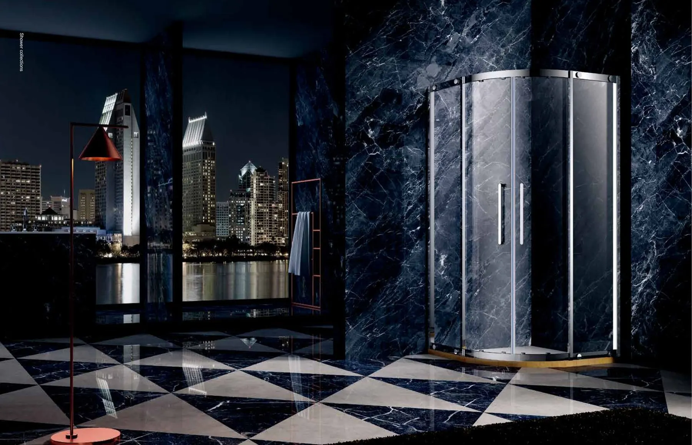

一九八六年創立 · 香港房屋署認可鋁窗供應商 · 香港鋁門窗同業聯會創會會員及主席
繁 / EN

常見問題
常見問題
新樓冇紗窗，可以加裝嗎？
可以。升威有下拉、風琴、趟紗等多款防蚊紗網，按窗框尺寸訂造。將窗框相片同尺寸 WhatsApp 畀我哋。
玻璃間隔分書房會唔會好暗？
玻璃間隔可以保留光線；想有私隱可以揀磨砂效果的工藝玻璃或調光玻璃。
升威會唔會上門安裝？
唔會。升威只做製造同供應，唔做安裝。揀好產品之後，同你嘅師傅講指定用升威就得；未有相熟師傅，WhatsApp 我哋可以介紹。想先睇實物，歡迎親臨大角咀、屯門或火炭門市睇樣板。
你係業主定師傅？
業主
同你嘅師傅講：指定用升威
升威只做供應、唔做安裝。揀好產品之後，同你嘅師傅講指定用升威；未有相熟師傅，WhatsApp 我哋可以介紹。想先睇實物，歡迎親臨三間門市睇樣板。
- 房屋署認可供應商升威係香港房屋署認可鋁窗供應商，持 PCCS-AW 認證。
- 自家製造，品質穩定窗撐同玻璃都由自家中山廠房生產，由原料到成品一手包辦，供貨穩定、品質一致。
- 三間門市睇樣板大角咀、屯門、火炭三間門市有實物樣板，揀之前可以親眼睇。
- 日後零件易配窗撐刻有 LE-RELAX 字樣，三間門市有零件，日後維修更方便。
- 一九八六年至今香港鋁門窗同業聯會創會會員及主席。
其他住宅項目
村屋及丁屋新界村屋、丁屋及獨立屋全屋鋁窗、露台趟門摺門、天台玻璃屋、欄河及窗花。
- 平開窗
- 高級趟門窗
- 摺疊門
- 玻璃組合屋及間格
- 欄河及鋁梯
- 紗窗、窗花及百葉
- 房署窗
- 不銹鋼窗撐及五金配件
- 浴屏
- 紗窗、窗花及百葉
- 平開門及地鉸門
- 矽膠密封膠
- 平開窗
- 高級趟門窗
- 摺疊門
- 浴屏
- 紗窗、窗花及百葉
- 不銹鋼窗撐及五金配件
- 平開窗
- 高級趟門窗
- 紗窗、窗花及百葉
- 浴屏
- 平開門及地鉸門
- 不銹鋼窗撐及五金配件
- 玻璃組合屋及間格
- 摺疊門
- 高級趟門窗
- 欄河及鋁梯
- 加工玻璃
- 紗窗、窗花及百葉
香港門市